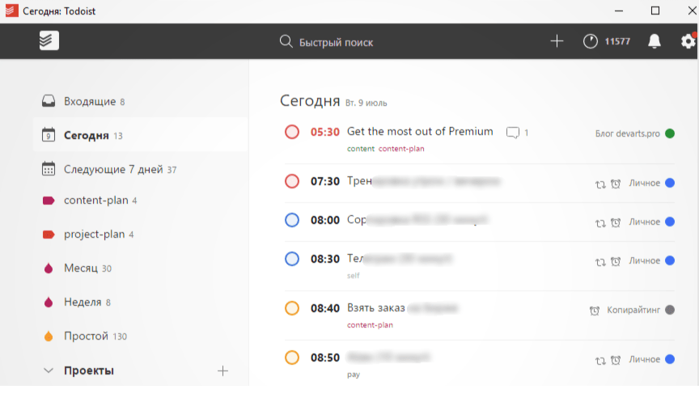
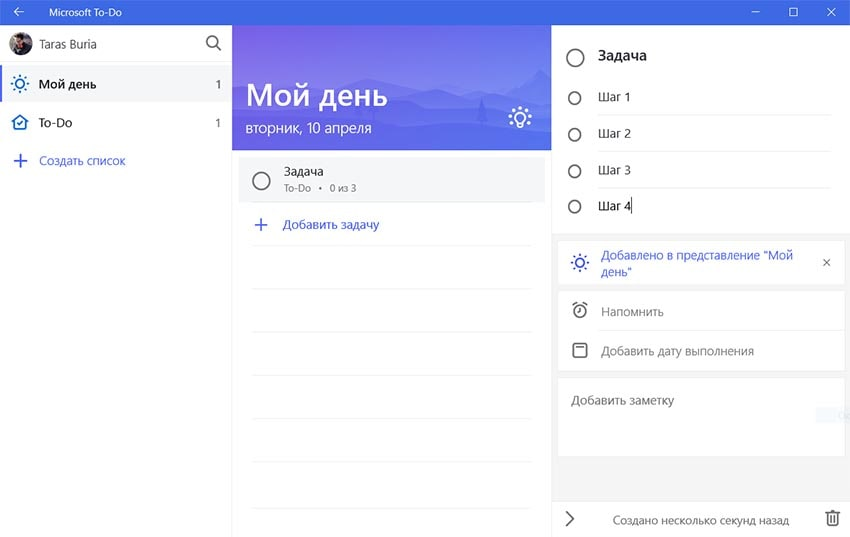
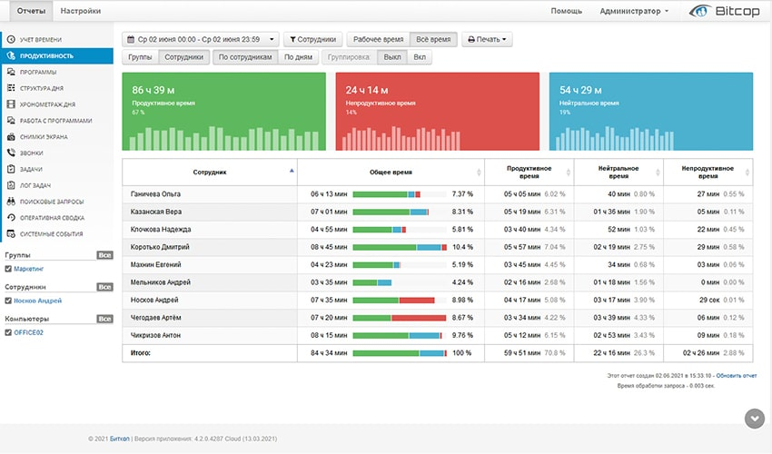
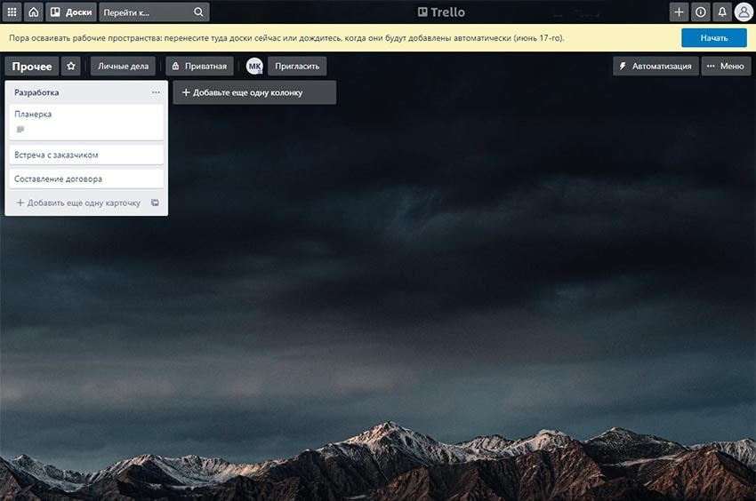

Методы и инструменты эффективного тайм-менеджмента
Содержание:
- Что такое тайм-менеджмент: ключевые определения
- Базовые принципы тайм-менеджмента
- Как уметь распорядиться своим временем: топ-10 конкретных действий
- Лучшие приложения для тайм-менеджмента
- Todoist
- Microsoft To-Do
- Bitcop
- Trello
- Google календарь
- Обзор книг по управлению временем (корпоративный тайм-менеджмент) от ведущих мировых экспертов
- Заключение
Успешного человека отличает способность планировать часы активности, равномерно распределяя нагрузку и отдых. Он не спешит и не опаздывает, не завершает проекты в последний момент, не теряет драгоценные минуты впустую. Это и называется эффективный тайм-менеджмент, когда периода дневной активности хватает на всё – не только на работу, но и на насыщенную жизнь. В этой статье мы подробно рассмотрим базовые и продвинутые методы, а также программные решения, которые помогут достичь наилучших результатов.
Что такое тайм-менеджмент: ключевые определения
Определение тайм-менеджмента сводится к его переводу. С английского Time Management переводится как «управление временем». Чаще всего подразумевается продуктивность сотрудников, точнее – повышение продуктивности их труда. На деле речь идет о том, чтобы научиться самому и научить подчиненных соразмерно распоряжаться своим временем.
Очевидно, что буквально контролировать время невозможно. Тогда что это за принцип, о котором мы говорим? В действительности, это научный подход к учету, распределению и оперативному планированию временных ресурсов. Это означает своевременное решение задач. Если ресурс распределяется целесообразно, ни один бизнес-процесс на предприятии не остается без внимания и всегда реализуется в установленный срок.
Результат – нет простоев и переработок. Это колоссальное заблуждение, что временя в рамках крупного предприятия нельзя управлять умно, чтобы каждый специалист решал свои задачи без задержек, ведущих к замедлению работы компании. Рядовой работник, менеджер, руководитель – научиться планированию времени может каждый.
Базовые принципы тайм-менеджмента
Планирование времени (или менеджмент времени) – это не один конкретный метод и не технология. Это умный подход к тому, как распоряжаться своим самым важным ресурсом. Несмотря на внешнюю сложность, управление временем на предприятии, а также эффективное управление личным временем реально свести к семи базовым принципам.
Планируйте все дела
Понятно, что действия у вас распределяются по приоритетам. Но чтобы уметь распорядиться своим временем правильно, нужно запомнить – все дела, которые вы решаете за день, важные. Потому что все задачи отнимают часы активности. Исходя из этого, осуществляйте планирование всего дня. Фиксируйте каждое действие заранее на письме, включая чашку кофе с другом. Это основы, которые научат распоряжаться временем эффективно.
Формулируйте желаемый результат
Вы не постигнете основные принципы современного тайм-менеджмента, если не разовьете навык декомпозиции цели (личной или рабочей – не имеет значения). Итог вашего труда должен соответствовать следующим параметрам – быть конкретным, измеримым, достижимым и актуальным. То есть, например, вы не просто поднимаете продажи на 30%, а проводите акции, пересматриваете ценовую и кадровую политику, запускаете рекламу в СМИ. Дробите масштабные проекты на перечень небольших задач и соответствующих им решений.
Расставляйте приоритеты
Умение управлять временем на предприятии, равно как и организация своего личного времени, требует понимания того, что нужно сделать в первую очередь. Мы уже сказали, что все дела за день важные, но некоторые нужно сделать быстрее, тогда как другие потребуют больше ресурсов. В основе личной и рабочей эффективности решений лежит концепция распределения дел по приоритету. Для этого можно использовать, например, Матрицу Эйзенхауэра, распределяя дела на:
- первостепенные срочные;
- первостепенные не срочные;
- срочные второстепенные;
- второстепенные несрочные.
Фокус задач
Чтобы понять, как научиться распоряжаться своим временем, нужно сначала освоить умение фокусироваться. Планирование конкретной задачи и всех связанных действий имеет своей целью позволить вам делать в один момент одно дело. Тут каждый сам себе тайм-менеджер. С этой точки зрения процесс управления своим временем сводится к двум моментам:
- делегируйте полномочия (что не требует именно вашего обязательного участия, всегда можно
передать, если вы в этот момент будете заняты ситуацией, которую кроме вас никто не разрешит); - научитесь говорить «нет» (система персонального тайм-менеджмента сводится в том числе к тому,
чтобы не брать лишние дела, то есть дела, воплотить которые качественно вы не сможете, потому
что не успеете или будете делать их в спешке).
Анализируйте и адаптируйтесь
Если вы уже применяете методы организации рабочего процесса, но всё равно не понимаете, как научиться управлять собственным временем, обратите внимание на индивидуальность подхода. Любая матрица, график, правило, принцип решения задач адаптивны. Это значит, что для конкретного дела вы подбираете свое эффективное решение. Иными словами, у каждого своя система, как лучше распоряжаться временными ресурсами. Начните прямо сейчас, пробуйте разные подходы, анализируйте результаты, подбирайте то, что лучше подходит вам.
Отдых тоже планируйте
Чтобы понять, как эффективно распоряжаться рабочим временем, нужно научиться распоряжаться личным. Отдых дает силы для решения ваших задач за рабочий день. Но отдых – это не только 7-8 часов сна в сутки. Это еще и хобби. Планируйте хобби, помечайте его как дела, которые нельзя отложить или перенести. Это базис личной эффективности, потому что отвлечение от рутины повышает производительность. Научите так же управлять временем своих сотрудников, раскрывая менеджмент в чистом виде.
Как уметь распорядиться своим временем: топ-10 конкретных действий
Вы прочли азы, но еще не знаете, как управлять своим временем. Потому что планирование – это не просто эффективный алгоритм шаблонных действий. Объективно эффективный (результативный) тайм-менеджмент – это способность применять конкретные шаги для решения задач, с которыми вы сталкиваетесь в процессе работы за день. Сейчас мы рассмотрим продвинутые методы, которые помогут «делать дела» быстрее и лучше.
Правило 1-3-5
Всё просто – вы можете сделать за день девять дел. Одно наиболее значимое, три чуть менее значимых, пять мелких (по масштабу и значению). Распланируйте на завтра и на неделю вперед все нужные действия, расставив их в соответствии с этим правилом. Скоро вы поймете, что девять дел – слишком много или слишком мало для вас. Тогда вы скорректируете правило под себя. Просто начните реализовывать дела в таком порядке, это поможет правильно распределять временные ресурсы, дав практический базис.
Правило Бейли
Его еще иногда называют правилом трех. Это правило может дополнять или полностью заменять предыдущее. Если хотите научиться грамотно распоряжаться своим временем, начните с данного подхода. Выберите три важные дела, которые нужно успеть реализовать за завтрашний день. Полностью сосредоточьтесь на них. Помните, что по статистике, 20% наших усилий приносят 80% результата. Но главное здесь – знать, для решения каких именно задач целесообразно прилагать максимум усилий.
Правило десяти минут
На удивление, это одно из самых эффективных правил в современной теории контроля временных ресурсов за рабочий день. Метод идеально прост – у вас есть дела, которые нужно реализовать, но вы не желаете их выполнять. Какие бы это ни были дела, примените метод управления и манипулирования своим сознанием. Скажите себе: «Десять минут – это совсем немного, это не проблема. Поэтому я потрачу на это дело лишь десять минут». Не сомневайтесь, вы потратите эти минуты эффективно, и вероятно – потратите больше. Вероятно, вы даже сделаете то, что не хотели. Просто начните.
Правило Чирилло
Иногда называется правилом Помодоро. Сам Франческо Чирилло не думал о том, как лучше распоряжаться временем. Он просто постоянно отвлекался, а потом вспомнил, что на телефоне есть таймер. Он начал ставить таймер на 25 минут. Когда таймер срабатывал – Чирилло 5 минут занимался чем-то кроме решения текущих задач. Потом снова ставил таймер на 25 минут. Теперь это один из самых эффективных методов тайм-менеджмента для организаций.
Правила цикличности 90/30 и 52/17
Умно распоряжаться ресурсами времени можно и по-другому. Правило 90/30 использует масса известных личностей, включая Лео Видрича (основатель Buffer). Идея в том, что вы с максимальной концентрацией решаете текущие задачи на протяжении 90 минут. Затем полчаса отдыхаете, после – опять полтора часа интенсивной работы. Вы удивитесь, как много можно успеть за день, используя этот простой принцип! Правило 52/17 аналогично, но циклы работы/отдыха за день укорочены. Второй вариант подойдет тем, кому сложно трудиться полтора часа без перерыва, сохраняя фокус на цели.
Поедание лягушек
Этот подход придуман легендарным Брайаном Трейси, лягушками он называл проблемы, которые совсем не хочется решать. Идея в том, чтобы в самом начале дня через силу «съесть лягушку». Управление временем в вашей организации можно реализовывать по этому правилу. Оно простое, но после «поедания лягушки» сотрудник буквально снимает камень с души, получая сразу два преимущества. Он качественно решил важную задачу (так как делал это со свежими силами) и будет продуктивен дальше, потому что у него отличное настроение (ведь лягушка уже съедена!).
Временные блоки
Управление временем и последовательное планирование как метод, воплощающий идею тайм-менеджмента, имеет одну сложность. Как распределять важные дела на день, если вы не знаете, сколько часов уходит на задачи, которые нужно выполнить завтра? Для тайм-менеджмента важно не только планирование, но и управление временными ресурсами. С данной целью мало расписать все текущие моменты на бумаге. Нужно сделать это на календаре с указанием промежутков времени, которые нужны для конкретных действий. Ведь, условно, кто-то сходит в магазин за хлебом за пять минут, а кто-то – за двадцать пять.
Подход «канбан»
Тайм-менеджмент – это целевой результат в минимальный срок. Понимая это, и изучив принципы современного тайм-менеджмента, специалисты компании «Тойота» вывели оптимальный вариант графического управления временем. Их подход – это доска с тремя столбцами: «Сделать», «Делаю», «Сделано». Каждый руководитель, менеджер и рядовой сотрудник имеет такую доску. В результате, каждый четко осуществляет планирование личной активности, выполняя важные дела в первую очередь и всегда в срок.
Принцип двух минут
Умение управлять временными ресурсами складывается из привычек. Управление временем на предприятии – не исключение. Решая текущие дела и задачи, заведите привычку – делать прямо сейчас всё, что займет до двух минут вашего времени. Попробовав пару дней, вы быстро поймете, зачем вам нужен тайм-менеджмент и как всё это работает.
Метод фокуса Тима Ферриса
Технология управления временем, включая управление временными ресурсами на предприятии, учит нас, что для повышения эффективности наших действий нужно в первую очередь учитывать два закона менеджмента времени. Это основы основ тайм-менеджмента, но они не для всех очевидны, поэтому американский писатель и инвестор Тим Феррис решил сформулировать оба закона в рамках своего метода фокуса:
- Закон 1 – Принцип Парето. Мы его уже упомянули. Вне зависимости от используемой вами технологии управления временем (тайм-менеджмента) примерно 20% ваших усилий решают 80% ваших дел.
- Закон 2 – Концепция Паркинсона.Вне зависимости от того, насколько четкое планирование и методы контроля, работа всегда занимает то время, которое нужно для ее выполнения.
Тим Феррис обозначает, что сначала не стоит думать о том, зачем и как управлять своим временем. Нет необходимости забивать себе голову понятием тайм-менеджмент, методами аналитики и планирования времени. В первую очередь учитесь фокусироваться на том, что нужно здесь и сейчас. Работу нужно сделать? Делайте!
Лучшие приложения для тайм-менеджмента
Если вы понимаете, что вам нужен тайм-менеджмент личного времени, вы просто применяете на практике вышеуказанные методики. Но планирование временного менеджмента на предприятии требует системного комплексного подхода. В этом случае контроль деятельности персонала помогает осуществлять специальный софт.
Todoist
Это веб-сервис и приложение, которое позволяет формировать в облаке блоки проектов и задач. Задачи можно делегировать, выстраивать иерархию исполнителей. Сервис отмечает, какие дела исполнитель выбрал, сколько времени потратил на их решение. Особенность – в зависимости от эффективности работы исполнителям присваивается уровень кармы, который показывает их суммарную работоспособность. Сервис подходит для базового тайм-менеджмента.
Обратите внимание, что у сервиса есть ограничения. Для бесплатной версии – не более
человек, не более 80 проектов. Для премиум версии – 50 человек, 200 проектов.
Приложение не позволяет гибко масштабироваться для крупных компаний.
Microsoft To-Do
Еще один сервис тайм-менеджмента, представленный веб-версией, а также десктопной и мобильной. Позволяет планировать дела и задачи по календарю, помечая, сколько часов на них должно уйти и сколько ушло реально. Сервис дает возможность удобно осуществлять контроль за своим временными ресурсами, оставлять доп. пометки для дел, пересылать проекты полностью или частично другим пользователям. Microsoft To-Do реально помогает управлять личным временем, но совсем не ориентирован на корпоративный тайм-менеджмент.
Обратите внимание, что, хотя сервис можно синхронизировать с другими решениями Microsoft, на деле это непросто осуществить даже с Outlook. Синхронизация со сторонним ПО крайне проблемная.
Bitcop
Мощное многоцелевое решение, которое позволяет управлять персоналом во всех аспектах – от уровня тайм-трекера до интегрированной защиты от инсайдерских сливов. Приложение фиксирует все дела и задачи специалистов и отделов, ведет тотальный контроль времени, блокирует доступ к нежелательным сайтам и приложениям. Есть встроенная функция кейлоггера, можно включить автоматические скриншоты рабочего экрана и формирование удаленных отчетов в ответ на различные действия специалиста. Что немаловажно для управления временем сотрудников – активная программа не видна и не нагружает систему.
Есть абсолютно бесплатная версия программы в облаке с широким функционалом, с ограничением по количеству пользователей.
Trello
Приложение позволяет заниматься базовым планированием задач, представляя собой виртуальную доску с карточками, где отмечаются актуально выполняемые дела и требующие внимания. Фиксируются общее время труда и затраты времени на конкретные задачи. Идеально подходит для базового тайм-менеджмента по принципу «канбан».
Обратите внимание, что у оригинального решения слабый исходный функционал, который «доводится до ума» плагинами. Вот только в бесплатной версии этих плагинов не так уж много.
Google Календарь
В этом облачном сервисе нет полноценной функции тайм-менеджмента. Его используют для управления временем и планирования событий, встреч, проектов. Сервис представлен веб-приложением и мобильным вариантом, основная работа ведется с виртуальным календарем, есть возможность настроить пуш-уведомления, которые будут предупреждать пользователя по электронной почте. Для личного планирования Google Календарь оптимален. Для корпоративного применения с целью повышения эффективности специалистов возможностей недостаточно.
Обратите внимание, что решение имеет бесплатную версию с сильно урезанным функционалом. Работать с ним можно только из google-аккаунта, то есть вам потребуется завести почту в данном сервисе.
Это общий обзор по основным возможностям. Подробный рейтинг систем учета позволит наглядно сравнить функционал и потенциал применения ряда топовых решений для тайм-менеджмента.
Обзор книг по управлению временем (корпоративный тайм-менеджмент) от ведущих мировых экспертов
Менеджмент времени – популярная сфера, потому что вермя – один из немногих невосполнимых ресурсов в нашей жизни. Поэтому закономерно, что выпущены без преувеличения десятки тысяч книг по этой теме. Увы, реально полезны из них единицы, о лучших из лучших рассказ ниже.
Если вам эта область действительно интересна, если вам нужны реальные практические сведения, продиктованные жизненным опытом людей с именем, то начните со следующих произведений – Дэн Кеннеди «Жесткий тайм-менеджмент», Люси Паладино «Максимальная концентрация», Штефан Нётенберг «Управление временем по помидору». Данные книги высоко оценены бизнесменами и независимыми экспертами, их стоит прочитать.
Как лидера направления выделим Брайана Трейси. Это американский бизнесмен, инвестор и писатель, книги которого переведены почти на все языки мира. «Точка фокуса», «Привычки на миллион», «Мастер времени», «Достижение максимума» – лишь некоторые из его бестселлеров. Трейси с 8 лет занимался тайм-менеджментом, хотя на тот момент такого понятия даже не существовало. Сейчас ему 77, а он как и прежде, строг к своему времени. Книги Трейси приоткрывают методы высшего уровня, для рядовых специалистов и руководителей всех эшелонов.
ВидиоЗаключение
Понятие «тайм-менеджмент» включает в себя грамотное управление временными ресурсами.
Составляйте списки того, что нужно делать прямо сейчас. Отмечайте, сколько часов уходит на достижение тех или иных целей. Простые цели реализуйте здесь и сейчас, для сложных – собирайтесь с силами, фокусируйтесь и «съедайте лягушку».
В аспекте корпоративного контроля временных ресурсов – используйте специализированные программные решения. Они помогут работать с сотрудниками на всех уровнях, ничего не упускать. Для вас в контексте временного менеджмента критически необходимо знать, чем тот или иной сотрудник занимается в каждый момент времени. Нельзя давать ему отвлекаться на социальные сети и развлекательные приложения. Если сделать отчеты прозрачными, наглядно показывать, что привело к премиям и штрафам, вы получите совсем другую работоспособность. В том числе, и применительно к специалистам, работающим на удалёнке.